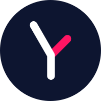
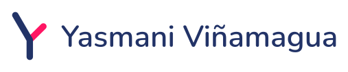

Aplicaciones de la marca · Yasmani Viñamagua
Composiciones de ejemplo con la paleta y tipografía oficiales (Nunito + Manrope). Los textos y datos de contacto son de ejemplo.
1 · LinkedIn: banner y avatar

Automatización de procesos con tecnología

Banner 1584 × 396 px sobre Medianoche con el lockup negativo, la línea de apoyo fuera del logotipo (Manrope Medium, Niebla, contraste 16,34) y el recurso de líneas de flujo reducido al 62 % de la altura. El avatar circular usa el símbolo en negativo con la rama rosa.
2 · Tarjeta de visita (90 × 50 mm)

[+00 000 000 0000]
[Ciudad, País]
Frente oscuro con el símbolo; dorso claro con el lockup horizontal. La barra rosa corta hace de firma y se repite en todo el sistema.
3 · Firma de correo
[sitio-web.com]
Símbolo a 62 px de alto (por encima del mínimo de 24 px), separador rosa y datos en Manrope. Sin título académico delante del nombre.
4 · Portada de memoria técnica (A4)
Diseño de la red GPON
Proyecto de ejemplo: urbanización "Ciudad Victoria". Documento descriptivo del diseño y sus criterios técnicos.
Sustituye los triángulos decorativos de la plantilla anterior por el recurso de líneas de flujo. Fondo Medianoche y acento rosa único.
5 · Documento interior con marca visible (A4)
1. Objeto
El presente documento describe el diseño de la red de acceso, los criterios de dimensionamiento y la normativa aplicable al proyecto.
2. Ubicación y antecedentes
El proyecto se localiza en el sector indicado y comprende las manzanas que se resumen en la tabla.
| Manzana | Lotes |
|---|---|
| Manzana 01 | 24 |
| Manzana 02 | 18 |
| Total | 42 |
Resuelve un fallo del análisis anterior: el documento Word llevaba la marca casi invisible. Aquí hay logo en cabecera, títulos con acento rosa y tabla navy.
6 · Presentación (16:9)
Automatización de procesos con tecnología
Del flujo manual al proceso automático
- Mapear el proceso actual
- Identificar tareas repetibles
- Automatizar y medir resultados

Portada oscura y diapositiva de contenido clara: poco texto, títulos en Nunito, viñetas rosa y la franja superior navy + rosa.
7 · Sitio web (cabecera y portada)
Automatización de procesos con tecnología
Procesos que funcionan mejor, con responsabilidad.
Ingeniería, redes y tecnología aplicadas a que los procesos funcionen mejor, con honestidad en cada decisión.
HablemosVer proyectosLa línea de apoyo va sobre el titular (Pizarra sobre Niebla, contraste 5,39); el resaltado rosa bajo "responsabilidad" aplica el rosa como acento sin usarlo en texto. Los botones son navy con texto blanco (contraste 12,09).
Recurso gráfico propio: las líneas de flujo (archivos recurso-flujo.svg y recurso-flujo-oscuro.svg) derivan de la entrada y la rama del símbolo: líneas a 60° que convergen y una rama rosa a 45°. Regla medible (v1.1): un solo recurso por pieza, anclado a una esquina, de como máximo el 60 % de la altura de la pieza, sin tocar texto ni el área de respeto del logotipo.